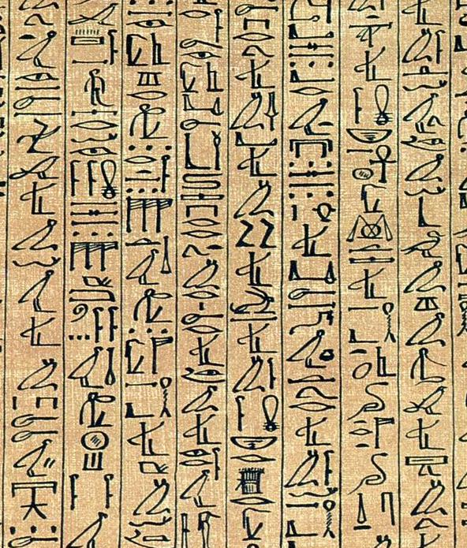

Загробный Египет
Иалу, или Иару (егип. sḫt-j3rw — «поля камыша»), — часть Дуата, где праведники, или их ка, обретают вечную жизнь после суда Осириса. Это не «рай облаков», а Египет-зеркало: та же земля и уклад — но обильнее, без недостатков. Умерший получал здесь жизнь, как на земле: поля и каналы, урожай, скот, люди, водные пути. В Текстах пирамид Иалу «висели» на небе, на востоке, с солнцем Ра; с Среднего царства поля перенесли под землю, на запад, — в «оазис» Дуата.
Путь через врата
Умершего, прошедшего суд, бог-хранитель Шаи ведёт к вратам Тота, преграждающим путь: отворить их можно было только заклинанием — паролем: «Дайте путь мне. Я знаю вас. Я знаю имя вашего бога-хранителя. Имя врат: „Владыки страха, чьи стены высоки…“». Дальше — перевоз через подземные озёра: оправданный пересекает воды Дуата в ладье, как Нил при жизни.
Ячмень Иалу
В 109-й главе Книги мёртвых Иалу окружены бронзовыми стенами, ячмень растёт в 4 локтя, полба — в 9; виньетка показывает поля, прорезанные каналами. А в «главе о полях» (заклинание 110) умерший сдает отчёт: «пожну ячмень, и сердце моё оживёт» — урожай собран, сердце обновлено. Поля были для египтян реальностью: на росписях гробницы Сеннеджема (Дейр-эль-Медины) он и жена рыбачат на полях Иару — как в отпуске. Из этой идеи выросли Елисейские поля.
Ушебти — слуги вечности
Но и на полях Иалу работают: нивы, как земные, требуют вспашки и полива. Здесь вступали в дело ушебти — фигурки-слуги, замещавшие умершего на работах. Над ними произносили или записывали заклинания с перечислением всех работ; в 15-й главе Книги мёртвых мёртвый вызывает их: «Я здесь!» — и они берут соху за хозяина. Бытовые сцены в гробницах и ушебти в гробу — не «сувенирный набор», а заказ вечности: проект загробного хозяйства, где урожай гарантирован.
Осирис — зерно
Владыка Иалу — Осирис, бог, умерший и воскресший, и в глубине — само зерно: сеют, зарывают, проращивают; в этом цикле — вся модель воскресения. К концу Среднего царства с Осирисом отождествлялся любой умерший, а не только фараон: «становление Осирисом» — цель каждого. Исида, по мифу, нашла ящик с телом мужа в камышах Дельты Нила — имя полей рождено из камыша. Храм-модель мира: потолок — небо, стены — поля Иалу, пол — загробное царство.